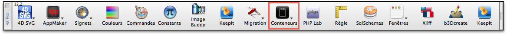
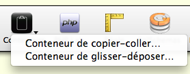
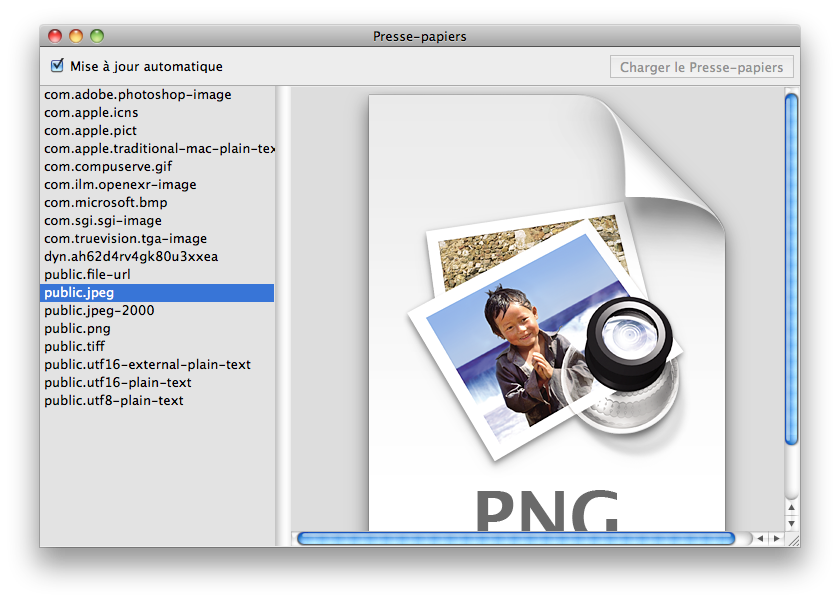
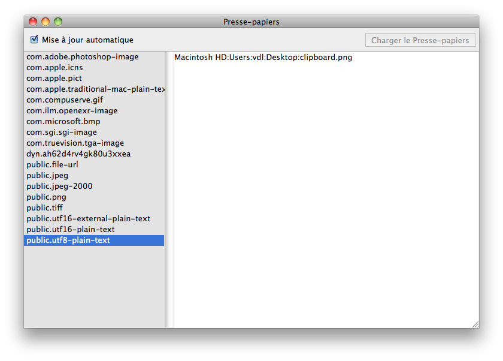
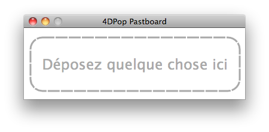
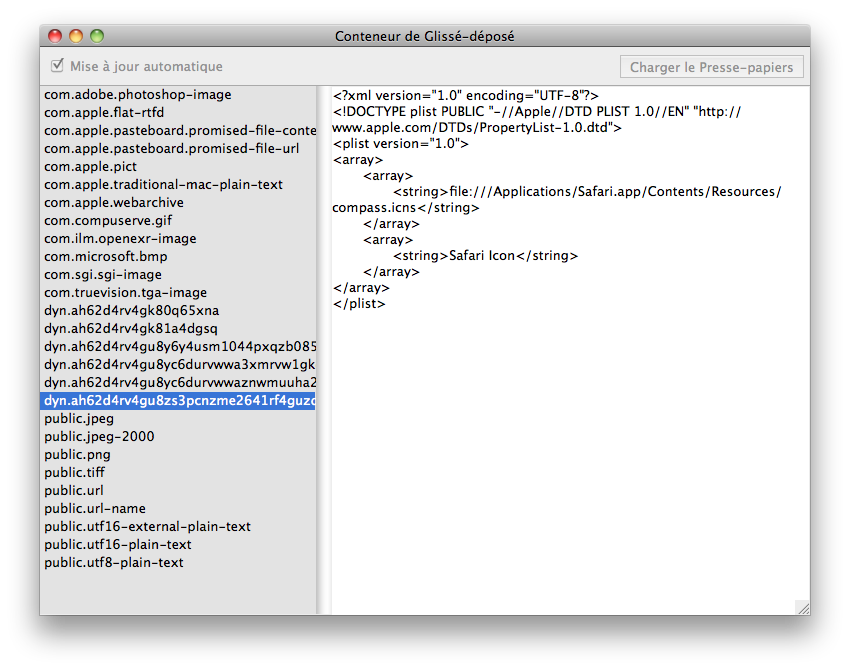

|
|
||||
4DPop Pasteboard est un utilitaire de gestion des conteneurs
système. Il permet, entre autres, d'explorer le contenu du
conteneur de copié-collé (Presse-papiers) et du conteneur de
glissé-déposé. (Cf. Gestion du conteneur de données )
Installation
| 1. | Créez un dossier "Components" à côté du fichier de structure de votre base* (".4db") |
| 2. | Placer le dossier "4DPop Pasteboard.4dbase"** ou un
alias de ce dernier dans le dossier "Components" |
| 3. | Ouvrez votre base. |
| 4. | Si
le composant 4DPop est installé un nouveau bouton "Conteneurs" se
trouve
dans la barre d'outils.  |
* Si vous voulez que le composant soit disponible pour tous vos
développements, utilisez le dossier "Components" de 4D, à
savoir, à la racine du dossier "Content" du package "4D.app" sur Macintosh et à côté du
fichier "4D.exe" sur PC.
** Sur
Macintosh le composant est un package, il apparaît donc comme un
fichier dont l'extension est ".4dbase". Cette extension n'est
pas obligatoirement visible en fonction des réglages de vos préférences
d'affichage.
Utilisation
Lorsque vous cliquez sur le bouton "Conteneurs" un menu est présenté qui vous permet de sélectionner l'un des outils disponibles.

- "Conteneur
de copier-coller…"
affiche l'explorateur de contenu du presse-papiers. La liste de gauche
présente les types de donnés disponibles dans le conteneur, le panneau
de droite affiche le contenu de l'élément sélectionné, image ou texte,
lorsque cela est possible. La case à cocher "Mise à jour automatique"
permet à l'explorateur de charger automatiquement le contenu du
presse-papiers lorsque la fenêtre est ramenée au premier plan. Si cette
option
est désactivée, il faut cliquer sur le bouton "Charger le Presse-papiers" pour
effectuer une mise à jour manuelle à partir du
presse-papiers courant.

 - "Conteneur
de glisser-déposer…" présente
une fenêtre qui attend que quelque chose soit déposé. Dès réception
l'explorateur s'ouvre, mais cette fois-ci présente le contenu du
conteneur de glisser-déposer. Dans ce cas, les
boutons de mise à jour sont désactivés.


Code source fourni
Ce composant est fourni en version compilée, mais vous trouverez le code source dans le dossier "SOURCES" à l'intérieur du dossier du composant.